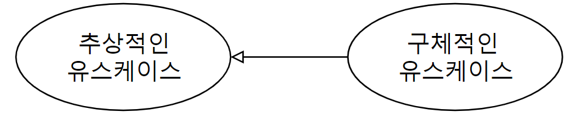

클래스(class)의 상속 관계와 유사한 개념입니다. 구체화된 유스케이스(child use case)는 일반화된 유스케이스(Parent use case)의 기능과 의미를 상속받고, 자신만의 기능을 추가하거나, 재정의하여 하나의 완전한 유스케이스를 만듭니다.
'구체적인 유스케이스'에서 '추상적인 유스케이스' 방향으로 끝부분이 삼각형의 테두리로 표현된 화살표를 실선으로 연결하여 표현합니다. 